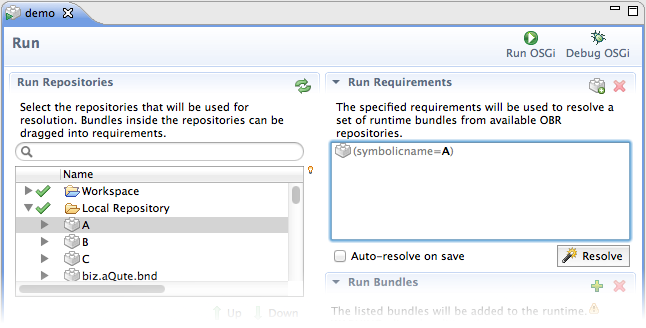
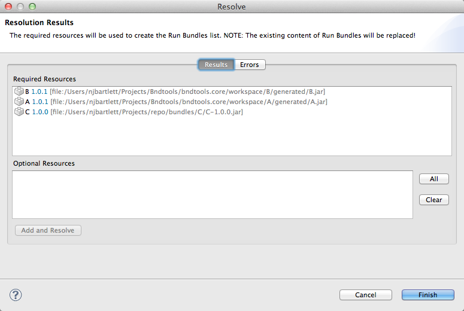
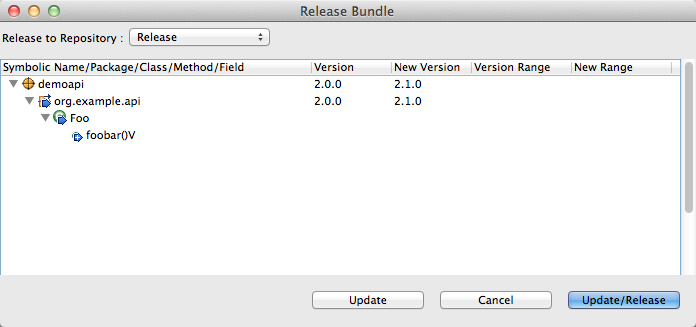

This is the first stable release of Bndtools, though many users will have installed preview versions. This page describes what has changed.
Bndtools 1.0.0 uses OBR (the OSGi Bundle Repository) in several important ways. OBR is used to assist with setting up and maintaining Run Configurations. In most OSGi runtimes there are a relatively small number of “interesting” bundles that represent the primary functionality of our application, and then a larger number of bundles that simply provide static dependencies, e.g. library bundles. Setting up a working run configuration usually means listing all of the bundles required including the boring libraries, however by using OBR we can just list the interesting bundles and allow the rest to be inferred.
In some OBR-based systems the resolution is done automatically against a set of repositories at runtime. However in many cases, we don’t want to do this automatically every time the framework is launched, because even a small change in a repository can lead to large changes in the resolution outcome. Bndtools enables OBR resolution results to be generated ahead of time, before launching the framework, and reviewed or potentially customised by the developer/deployer.
The following screenshots should make this clearer. In our Local Repository we have bundles: A, B and C. In this example, A depends on B and B depends on C, but we are really only interested in A so we add A to the Run Requirements panel (we can just drag-and-drop from the repository).

Clicking resolve opens the OBR resolution results window, showing us the list of physical resources (i.e. bundles) that we need to satisfy the requirements.

Clicking Finish writes these results into the Run Bundles panel, and this defines the actual bundles that end up in the runtime framework. Of course we can still edit the requirements and resolve again, and the changes will be dynamically deployed into the running framework.
Bndtools contains powerful tools for versioning exported packages according to the OSGi Semantic Versioning recommendations. When a bundle is “released” into a repository, we analyse its contents and detect any changes with respect to previously released versions. Those changes are then used to infer the correct export version for the new bundle:

As has always been the case, consumers of this bundle automatically use the correct version range, for example [2.1,3.0), depending on the version they have resolved against at build time.
In Bndtools 1.0.0, the Eclipse incremental builder has been completely overhauled. Using the new builder we can be confident that our bundles are always up to date with the latest source code. The new builder is also much better at avoiding unnecessary rebuilds, and so does not suffer from the workspace lock-ups that affected earlier Bndtools versions.
While Bndtools provides a powerful GUI for editing bnd descriptor files, we still sometimes have to drop down to the source, for example to use an instruction or setting that is not available yet via the GUI. The source editor in the old Bndtools was extremely basic, but in Bndtools 1.0.0 the editor now includes auto-completion of known headers and highlighting that distinguishes between known OSGi headers, bnd instructions and other unknown headers.